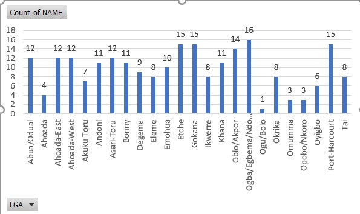
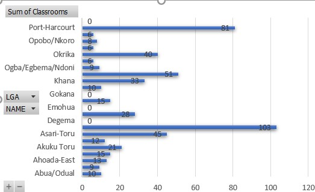

Rivers State, one of Nigeria's most populous regions, faces significant challenges in its educational systems. The map below provides a detailed visualization of hospitals and schools across the state, highlighting the pressing issues they face. From under-resourced educational facilities to insufficient classrooms, the situation requires urgent attention from decision-makers and investors.
The schools across Rivers State tell a similar story of inadequacy. Many of the mapped schools suffer from overcrowded classrooms, with insufficient classroom sizes to accommodate the growing number of students. Facilities such as toilets are either inadequate or entirely absent, particularly in rural schools, where children are often forced to attend classes in poorly maintained or even unsafe structures.
Key services like water availability, sports pitches, and sick bays are frequently lacking, which significantly impacts the students' health, well-being, and overall learning experience.
This map provides not just a geographical overview but a comprehensive insight into the systemic issues faced by Secondary schools in Rivers State. The data collected and visualized here serves as an invaluable tool for:
This Data Can Help:
Team Splendor couldn't participate in the challenge as the link in the API documentation earlier sent was not found, We sent email, though there was no direct
response, but the team noticed that the site came up by monday being 18th, November.
The team tried to integrate the gridcode API in the map but we kept getting an error message that says 'API Key is expired'
We hoped to have participate in the challenge to see the uniqueness it would have added to our map.
The data for schools was from Rivers State Ministry of Education Database. OpenstreetMap and Google map were equally used. They are all Open Source Data.